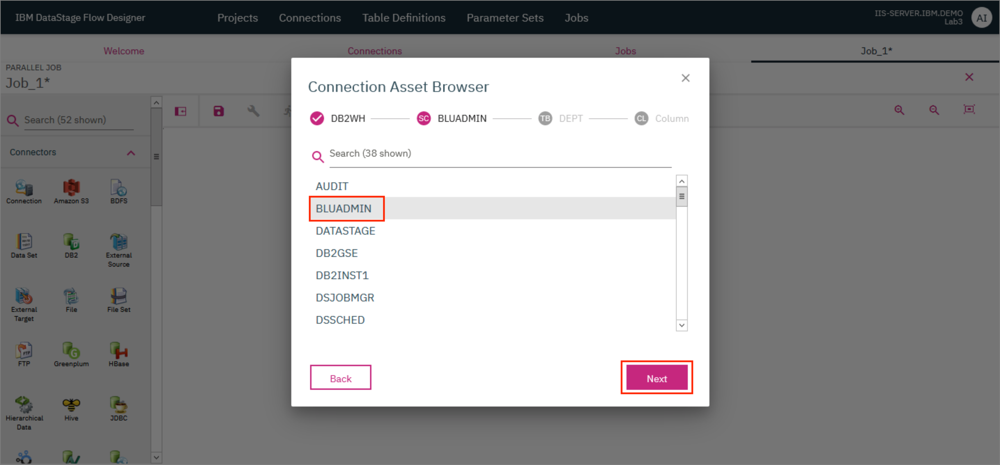

Lab: DataStage with database connections¶
DataStage Flow Designer enables users to create, edit, load, and run DataStage jobs which can be used to perform integration of data from various sources in order to glean meaningful and valuable information.
The purpose of this lab is to design a DataStage job to satisfy the following problem statement:
As a data engineer, you have been asked by the Line of Business that you support, to produce a new data file that contains all employees whose total compensation is less than $50,000. The file must also contain the Department Name that the employee works in, and the mean average salary of all employees in that department who earn less than 50,000. In addition, the file must be sorted in descending order, based on the mean average salary amount. Finally, the application that will consume this file, expects the full name of the employee to be in one field, formatted as first, middle initial, last).
NOTE: You can use the Peek stage to check intermediate results in the job as demonstrated in Lab 1.
In this lab, you will learn:
- How to create a job in DataStage.
- How to load data from Db2 Warehouse into DataStage.
- How to perform transformations such as modifying tables, joining tables, aggregating table data and sorting table data.
- How to write tabular data from DataStage into a file.
- How to run jobs.
- How to view logs for jobs.
NOTE: You can use the Peek stage to check intermediate results in the job as demonstrated in Lab 1.
This lab is comprised of the following steps:
- Create a Transformation project
- Add database connection
- Create the job
- Compile and run the job
- View output
Before you start¶
Before we start the lab, let's switch to the iis-client VM and launch Firefox.

Click on Classic Launchpad in the Bookmarks tab. The first time you try this out, you might see a certificate error. To get past it, click on Advanced... and then click Accept the Risk and Continue.
Click on DataStage Flow Designer.

Login with the credentials isadmin/inf0Xerver.

This brings up the DataStage Flow Designer. Click OK.

1. Create a Transformation project¶
- On the IBM DataStage Flow Designer, click on the
Projectstab and click+ Create. In the modal that opens up, type in a name for the project and clickCreate.

The project takes a few minutes to be created and once ready, it will be visible on the Projects tab.
- Click on the tile for your newly created project. In the modal that opens up, verify that the name of your project is provided as the
Project Nameand clickOKto switch the project.
2. Add database connection¶
The input tables - EMP (containing employee data) and DEPT (containing department data) - are already loaded in Db2 Warehouse. Let's add a Db2 warehouse instance as a Connection in DataStage.
- Click on the
Connectionstab and then click+ Createto add a new connection.

- Provide the following connection details and click
OK. ClickSaveon the new modal that pops up.
Name: DB2WH
Connector type: JDBC
URL: jdbc:db2://db2w-kzwbsid.us-east.db2w.cloud.ibm.com:50001/BLUDB:sslConnection=true;
Username: bluadmin
Password: ****************

A tile for the new connection will now be displayed in the Connections tab.

3. Create the job¶
- Click on the
Jobstab and then click+ Create. ClickParallel Job.

A new tab with the name Job_1* opens up where you can now start designing the parallel job.
The first step is to load the input tables DEPT and EMP into DataStage.
The DEPT table contains the following columns:
| Column Name | Data Type | Nullable |
|---|---|---|
| DEPTNO | VARCHAR(3) | N |
| DEPTNAME | VARCHAR(36) | N |
| MGRNO | CHAR(6) | Y |
| ADMRDEPT | CHAR(3) | N |
| LOCATION | CHAR(16) | Y |
The EMP table contains the following columns:
| Column Name | Data Type | Nullable |
|---|---|---|
| EMPNO | CHAR(6) | N |
| FIRSTNME | VARCHAR(12) | N |
| MIDINIT | CHAR(1) | Y |
| LASTNAME | VARCHAR(15) | N |
| WORKDEPT | VARCHAR(3) | Y |
| PHONENO | CHAR(4) | Y |
| HIREDATE | DATE(4) | Y |
| JOB | CHAR(8) | Y |
| EDLEVEL | SMALLINT | N |
| SEX | CHAR(1) | Y |
| BIRTHDATE | DATE(4) | Y |
| SALARY | DECIMAL(9,2) | Y |
| BONUS | DECIMAL(9,2) | Y |
| COMM | DECIMAL(9,2) | Y |
- First, drag a Connection connector to the canvas. In the modal that opens up, select the
DB2WHconnection that was created earlier and clickNext.

- On the next screen, select the
BLUADMINschema and clickNext.

- On the next screen, select the
DEPTtable and clickNext.

- On the next screen, click
Add to Job.

- Drag another Connection connector to the canvas and repeat the steps given above but this time, select the
EMPtable instead. Once you complete the steps, you should see the two Connection connectors on the canvas.

Use a Transformer stage to perform the following two modifications:
- Update the output of the
EMPtable by replacing any NULLMIDINITvalues with" ". This is needed for a future step where we will combine the FIRSTNME, MIDINIT and LASTNAME columns to create the FULLNAME of the employee. -
Currently, the
EMPtable uses theWORKDEPTcolumn to identify the department number whereas theDEPTtable uses theDEPTNOcolumn. Modify the output of theEMPtable by changing the name of theWORKDEPTcolumn toDEPTNO. This is needed for a future step where we will Join the two tables. -
Drag and drop a Transformer stage next to the Connection connector for the
EMPtable. Provide the output of theEMPtable Connection connector as the input to the Transformer stage. For this, click on the little blue dot on the right side of the Connection connector and drag the mouse pointer to the Transformer stage.
NOTE: For another method to connect the Connection connector to the Transformation stage, click on the Connection connector to select it, then drag and drop the Transformation stage. The Transformation stage will automatically be connected to the Connection connector.

- Drag and drop a Join stage to the canvas and provide the output of the Transformer stage as the input to this Join stage.

- Double click on the Transformer stage to open up the stage page. In the
Propertiestab, click+ Add. A new entry is added in the table below. Use this to define a "Stage variable" (a local variable that is available only within this stage) namedMIDINITIALwhich will represent the middle initial of the employee with any NULL values replaced with the empty string. Double click on{derivation}to open up the Derivation Builder.
- Begin building the derivation rule for
MIDINITIALby finding theNullToValuefunction in the table. Clicking on the entry in the table will insert it in the "Derivation" at the top. You can also use the search bar to look for the function. Replace the%input_column_input_column%with the<Link>.MIDINITinput variable which can also be found in the table and the%value%with" ".<Link>represents the identifier of the input link for the Transformer. ClickOKto go back to the Stage page.

- Update the Name of the stage variable to MIDINITIAL, the SQL type to Char, the Precision to 1 and the Scale to 0.
- Now go to the
Outputstab and in the table find the entry for theMIDINITcolumn. Double click on the derivation value for this entry (it will open up the Derivation builder) and change the derivation value to use the newly createdMIDINITIALstage variable instead. Next, look for the entry for theWORKDEPTcolumn. Double click on theWORKDEPTvalue under theColumn namecolumn and replace the text withDEPTNO. ClickOK.

- Both the tables now have a column called
DEPTNOwhich can be used to join the tables. Provide the output of theDEPTtable Connection connector as the second input to the Join stage. Double clicking the Join stage brings up the stage page where you can verify that theDEPTNOis being used as theJOIN KEYand theJoin TypeisInner.

- Next, add a Transformer stage to the canvas and provide the output of the Join stage as the input to the Transformer stage.
- Double click the Transformer stage to open the stage page. We will add 2 stage variables to this Transformer stage. In the
Propertiestab, click+ Add. A new entry is added in the table below. Use this to define a stage variable namedTOTALCOMPwhich will represent the total compensation (the sum of bonus, commission and salary) of the employee. Double click on{derivation}to open up the Derivation Builder.

- Build the derivation rule for TOTALCOMP by finding the
BONUS,COMMandSALARYinput columns in the table. Clicking on the entries in the table will insert them in the "Derivation" at the top. Type in+signs between them in order to complete out the derivation. You can also use the search bar to look for the fields. When inserted in the "Derivation", the column names will be prepended with the identifier for the input link. ClickOKto go back to the Stage page.

- Update the Name of the stage variable to TOTALCOMP, the SQL type to Decimal, the Precision to 9 and the Scale to 2.

- Repeat the process above to add another Stage variable
FULLNAMEwhich will represent the complete name of the employee. Provide the Derivation asCompactWhiteSpace(<Link>.FIRSTNME:" ":<Link>.MIDINIT:" ":<Link>.LASTNAME), the Name of the stage variable as FULLNAME, the SQL type as Varchar and the Precision as 36 and the Scale as 0. ClickOKto save the changes and return to the canvas.
NOTE: <Link> needs to be replaced with the identifier of the input link. CompactWhiteSpace is a function that will compact any continuous white spaces into a single white space. : is the operator used for concatenation.
- Next, add a Join stage and an Aggregator stage to the canvas. Connect the Transformer stage to both these stages such that the output of the Transformer stage is provided as the input to both these stages.
Since the output links have now been added, we can provide the 2 stage variables TOTALCOMP and FULLNAME as outputs of the Transformer stage and once that is done, these values will be available as inputs in the subsequent stages.
-
Double click on the Transformer stage to open the stage page. Go to the
Outputstab. Click on+Addtwice to add 2 new entries in the table. Update one entry with the Derivation value as TOTALCOMP, the Column name as TOTALCOMP, the SQL type as Decimal, the Precision as 9, the Scale as 2 and set Nullable to true. Update the second entry with the Derivation value as FULLNAME, the Column name as FULLNAME, the SQL type as Varchar, the Precision as 36 and the Scale as 0. -
We also need to add a Constraint here, which will ensure that only the records with
TOTALCOMPmore than 50000 are sent in the output. Click on the empty space underConstraintto open up the Derivation Builder. Specify the derivation asTOTALCOMP>50000. -
Switch to the second output link by clicking on the
Link_<number>under Output name and repeat the above steps to add the 2 stage variables to the output and to add the constraint. ClickOKto save the changes and return to the canvas.

- Provide the output of the Aggregator stage as the input to the Join stage. Double click on the Aggregator stage to open the stage page. Select
DEPTNAMEas the grouping key.
- Scroll down to the Aggregations and select the Aggregation Type as
Calculation, Column asTOTALCOMP, Calculation Type asMean Valueand clickAdd Calculation +.
- Go to the
Outputstab and verify that you can see 2 output columns -MEAN_TOTALCOMPandDEPTNAME. ClickOKto save the changes and return to the canvas.

- Drag and drop a Sort stage on the canvas and provide the output of the Join stage as the input of the Sort stage.

- Double click on the Join stage to open the stage page. On the
Propertiestab, verify that the Join Key isDEPTNAMEand the Join Type isInner.

- Go to the
Outputstab and verify that you can seeFULLNAMEandMEAN_TOTALCOMPin the output column list.
- Double click on the Sort stage to open up the stage page. Specify the Sorting Key as
MEAN_TOTALCOMPand the Sort Order asDescending. ClickOK.
- Drag and drop a File connector to the canvas. In the modal that opens up, check the
Add connector as targetcheckbox and clickAdd to Job.

- Provide the output of the Sort stage as the input to the File connector. Double click the File connector to open the stage page, and provide the name of the output File as
output.csv. SpecifyComma-separated value (CSV)as the File format. EnableFirst row is headerand provide Null value as"". ClickOK.

4. Compile and run the job¶
- Click the
Saveicon to save the job. If you wish to, you can provide a different name for the job in the modal that pops up. ClickSave. Once the job is saved, click on theCompileicon to compile it. If compilation is successful, you should see a green check mark and the messageCompiled successfullydisplayed on the screen.
- Click the
Runicon to run the job. In the modal that opens up, clickRun.
5. View output¶
- The output file will be saved on the server. Switch to the server VM by clicking the first icon on the
Environment VMs paneland selectingiis-server. Login as therootuser with the passwordinf0Xerver.
- CD to the location where you had stored the file. If you provided a path starting at "/", then it will be stored at that location in the server. Since we had only provided
output.csvas the file path in the File connector, the file will be available in the Transformation project's folder, i.e.,
/opt/IBM/InformationServer/Server/Projects/<project-name>/

CONGRATULATIONS!! You have completed this lab!